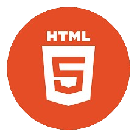
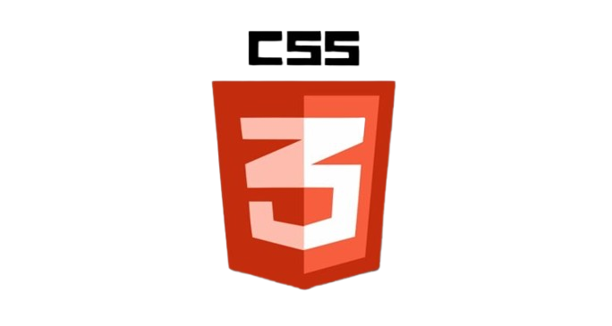
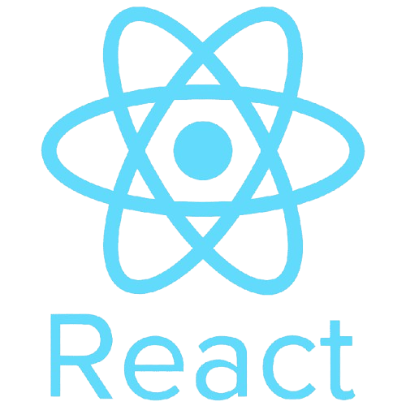
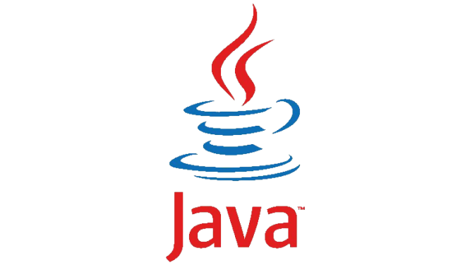

I am a motivated B.Tech Computer Science graduate with a strong passion for
Full-Stack development and a solid foundation in programming and problem-solving.
I specialize in
HTML, CSS, JavaScript and MERN stack (MongoDB, Express.js, React.js, Node.js)
and enjoy building user-centric web applications.
My academic background and internship at ProdigyInfoTech have honed my skills in creating
responsive and user-friendly web applications. During my internship, I developed projects using HTML,
CSS, and JavaScript, demonstrating my ability to deliver clean, efficient, and functional code.
I'm eager to contribute my technical expertise, creativity, and enthusiasm to build impactful digital solutions.
Over time, I expanded my skill set to include:
Front-End: Crafting engaging user interfaces with React.js.
Back-End: Building scalable applications using Node.js
Databases: Managing data with MongoDB.
About
I am a Computer Science Engineering (CSE) student with a strong foundation in programming,
software development, and computer systems. My education covers core areas such as data structures
and algorithms, database management systems, computer networks, and operating systems. I have hands-on
experience with Java, JavaScript, and SQL, along with web development using the MERN stack. I’ve worked
on projects integrating both front-end and back-end technologies. My learning journey emphasizes
practical problem-solving and staying updated with emerging technologies.
Education Qualifications
Course
College/School
Year of Passing
Percentage
Bachelor of Technology (CSE)
RSR Engineering College
2024
83%
Intermediate (MPC)
Sri Chaitanya Junior College
2020
85%
Xth Class
Z.P.H. School
2018
90%
Skills

★ Problem-Solving

★ Critical Thinking
★ Creative Thinking

★ Time Management
★ Teamwork and Empathy
★ Decision-Making

★ Verbal and Written Communication
I possess strong skills in programming, web development, and database management, with proficiency in Java, JavaScript, and SQL. I specialize in the MERN stack (MongoDB, Express.js, React.js, Node.js), enabling me to build dynamic full-stack applications.
Work
Stop Watch
I built a Stopwatch using HTML, CSS, and JavaScript
to help users track time easily. The app features start, stop, reset , and lap buttons for simple control.
JavaScript updates the time display in real time. I focused on making it user-friendly and responsive. Future updates could include a lap feature and more styling options. Click for Code
Tic-Tac-Teo
I created a Tic Tac Toe game that lets two players compete on a 3x3 grid. Players take turns clicking to place their marks (X or O). The game checks for a winner or a draw after each turn. I used HTML, CSS, and JavaScript to build it, making it interactive and fun. This project helped me enhance my coding skills and understand game design better. Click for Code
Weather App
I built a Weather app that retrieves weather data from an API based on either the user's location or a location they enter. The site displays current weather conditions, temperature, and additional relevant information. I used HTML, CSS, and JavaScript to create an engaging and responsive interface. This project improved my skills in API integration and front-end development. It demonstrates my ability to create practical applications that enhance user experience.
Click for Code
 ★ Creative Thinking
★ Creative Thinking